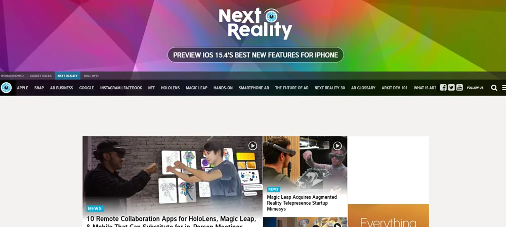

Best Tech Blogs in 2023: The 19 Best Resources Organized by Subject
Tech blogs are one of the best ways to stay updated with the latest technologies. But every blog offers a unique perspective on the subject. Knowing the best tech blogs means always getting the whole story. And you’ll soon see the best resources to stay up to date with the technologies you care about the most.
In this article, you will find an overview of the best tech blogs in 2023, organized by topic; tech blogs focused on general trends, tech blogs focused on the metaverse, virtual reality, and augmented reality.
Table of Content:
- What’s the Underlying Importance of Technology?
- Why Keep Up With Latest Trends Using the Best Tech Blogs
- The 7 Best Tech Blogs That Look Into General Trends
- The 4 Best Tech Blogs That Report on the Metaverse
- The 4 Best Tech Blogs Which Look Into Virtual Reality (VR)
- The 4 Best Tech Blogs Related to Augmented Reality (AR)
What’s the Underlying Importance of Technology?
Of course, this does raise the question of why technology is so important. Why should people keep up with the best tech blogs? It comes down to how technology brings the essential parts of life together.
Technological innovation helps people optimize both their professional and personal lives. This can come about through improved exchange of information thanks to IT. But the importance of technology is seen in every field. New tech helps enhance the quality of life length of life and improves our day-to-day experiences. Technology offers potential solutions to most problems as long as we stay informed.
Why Keep Up With Latest Trends Using the Best Tech Blogs
It’s also important to remember that technology does more than help humanity. Keeping up with technological trends can also help you in a personal sense. This is especially true in the professional world.
When people have leadership roles, they’re always looking toward the future. This foresight can be obtained by keeping track of the latest innovations through tech blogs. You can plan for it when you know what tech is on the horizon. This also helps to build up your overall credibility and reputation for reliability.
Knowing about future trends, like metaverse trends, helps you work creatively with them. You have time to let new tech sit in your mind and consider how it could impact branding or advertising. Plus, you’ll have those strategies thought up well before the competition.
There’s also a personal touch that comes from new technologies. As people plan for upcoming technologies, they usually expand their professional and personal circles. It’s an opportunity to brainstorm with others with a similar far-reaching outlook on the world. This leads to new possibilities, clients, and chances to impress everyone involved. And, of course, this culminates in professional and personal growth.
The 7 Best Tech Blogs That Look Into General Trends
Technology is easily separated into several subcategories. But it’s also essential to keep an eye on the border picture. More generalized tech blogs take a larger-scale view of the industry. And the following selections are the best tech blogs in 2023 with that generalized industry view.
The Verge
The Verge was created in 2011 to provide the public with a broad view of the growing technological landscape. It began in response to the fact that digital technology was moving from a fringe subject to essential to the average person’s lifestyle. Today The Verge is carrying out that mission by covering everything related to technology. This ranges from satellite launches to games and science.
Wired

Wired was one of the best tech blogs before blogging even existed. It was initially started as a print magazine in 1993. Wired quickly became one of the most authoritative sources of information about new technologies. It even coined terms like crowdsourcing. Today wired continues that tradition online. It provides news on almost anything related to technology. This includes computing, tech culture, medical tech, and other subjects.
Venturebeat
Venturebeat has an impressive history dating back to 2006. It combines longevity with a uniquely qualified staff of specialists to create an exceptionally informative tech blog. Venturebeat covers almost everything related to modern technology. But it also offers a particular emphasis on the explanatory side of the world. Venturebeat looks at many aspects of life and reveals the hidden technological underpinnings. It also speculates on the impact of developing technologies.
You can read Venturebeat here.
CNET
The name CNET is synonymous with technology. It’s been reporting on the subject since the 90s. CNET’s history has helped it build an impressive staff of experts worldwide. This lets them report on the global impact of new technologies. It’s one of the best tech blogs to see what’s going on worldwide. This includes computers and smartphones, but also tech services and entertainment.
Gizmodo
Gizmodo is one of the best tech blogs if you want to see everything related to technology. The blog’s primary focus usually centers on the technologies you use most in your daily life. This includes computers, smartphones, software, services, gaming systems, and tablets. But Gizmodo also examines how technology impacts events in the world around us. The blog’s reach even extends to subjects like science fiction.
Digital Trends
Digital Trends was founded with an essential purpose. The blog was created to help filter out all the noise surrounding technology discussions. The tech blog helps people navigate this often confusing subject by examining how technology empowers people’s lives. It covers the latest news on phones, computers, tablets, and accessories. But the perspective always returns to actual usage scenarios in the reader’s life.
You can read Digital Trends here.
Mashable
Mashable began as a passion project in 2005. The initial simple WordPress blog quickly exploded in popularity due to the unique insight on display. It puts a heavy focus on gadgets like computers and smartphones. But its scope even extends to pet tech. Mashable is now considered one of the best tech blogs to read if you want to stay updated on the latest technological trends.
The 4 Best Tech Blogs That Report on the Metaverse
The metaverse is one of the most exciting new technologies. The fact that it’s both vitally important and rapidly developing, so it can be hard to stay on top of. But the following four tech blogs will ensure that you always know the latest metaverse news.
Building The Metaverse Blog
Building the Metaverse Blog is one of the essential blogs covering this new digital frontier. It’s one of the best tech blogs for in-depth analysis of the metaverse. The author, John Radoff, expertly describes some of the most complex subjects of the metaverse. For example, he’s drawn up the 7 layers of the metaverse to highlight how it functions in an easy-to-understand way.
You can read Building The Metaverse Blog here.
Metamandrill.com
Metamandrill.com looks at the metaverse, which touches on both the practical and explanatory sides. Its primary premise centers around the idea that the metaverse merges the online and physical worlds. The metaverse is constantly changing and is still quite experimental. But this tech blog is dedicated to tracking and explaining its progress to readers.
Metamandrill makes the metaverse world clear, providing explanatory articles and guides about the metaverse and related topics.
You can read Metamandrill.com here.
MatthewBall.vc
The best technology blog options provide readers with rare, expert opinions. Readers have flocked to Matthew Ball’s blog because he allows for that. Matthew Ball has a wide range of experience with venture funds, corporate advisory, and the metaverse. This means that he can explain the business side of the metaverse. It’s an especially important subject, given that the biggest names in tech are investing heavily in the metaverse.
You can read MatthewBall.vc here.
Ryan Schultz
The metaverse is often seen as young technology. But it dates back over 14 years to Second Life. Ryan Schultz has walked the metaversal path since those early days. It’s considered one of the best tech blogs, thanks to his long-term perspective. He can often see the future of the metaverse because he’s so familiar with its past. And he illustrates it all to readers.
You can read Ryan Schultz here.
The 4 Best Tech Blogs Which Look Into Virtual Reality (VR) & Related Gear
Technology blogs help people stay updated with some of the fastest-moving trends. And it’s hard to think of many technologies evolving as quickly as virtual reality. While many metaverse-related blogs touch on VR, the following tech blogs strongly focus on all aspects of virtual reality, like VR technology, VR games, VR headsets, and other devices.
Road to VR
Tech blogs have a lot of material to work with regarding VR. But Road to VR earns a solid place among the best tech blogs thanks to its ability to help readers navigate this otherwise confusing realm. The blog was created in 2011 to explore the consumer side of VR. It covers both VR hardware and software. It also examines the more significant impact of VR.
Upload VR
Upload VR is one of the best tech blogs focused on VR. This is partially due to the dedicated team of journalists who cover the latest news worldwide. But it’s also because this tech blog examines the intersection between VR and people. It strives to explain every item in depth. But it also looks into how VR impacts the larger culture.
VR World
VR World was created in 2014 to provide news and analysis of the latest technologies. This tech blog provides coverage of most general tech. But as the name suggests, VR is its primary focus. VR World provides a more in-depth look at VR than most other blogs. This includes trade shows, business analysis, social media, and even white papers. It also looks into new technology’s role in VR.
The Ghost Howls
This tech blog offers an intriguing look into VR from someone invested in almost every element of it. Tony has been hooked on VR since trying an Oculus in 2014. Since then, he’s created a VR startup, developed full-body immersion tech, and worked in both development and PR. Tony brings that broad expertise to the fore as he writes about VR and related technologies.
You can read The Ghost Howls here.
The 4 Best Tech Blogs Related to Augmented Reality (AR)
Augmented reality is a technology that melts the offline and virtual worlds into a singular whole. It’s in an early enough stage that companies are innovating rapidly. The following are the best tech blogs in 2023 to update you on the latest AR trends.
Next Reality
The best tech blogs offer a unique perspective on the world. And Next Reality certainly does so. It looks into innovations surrounding augmented, mixed, and virtual reality. They’re especially notable for looking into ambient computing as well. Ambient computing and augmented reality are important aspects of the metaverse which are often overlooked. Next, Reality hopes to accelerate public adoption of these and similar technologies by highlighting their overall importance.
You can read Next Reality here.
AR Post
AR post provides a deep dive into XR technology. This refers to not just AR but also VR and mixed reality. This includes breaking and noteworthy news, opinions, and reviews. AR Post is among the best tech blogs partly because it covers so much of this specialized topic. The blog doesn’t just note new trends; it explores them.
You can read the AR Post here.
AR VR Magazine
AR VR Magazine is one of the best tech blogs for anyone interested in augmented or virtual reality. It takes a multi-platform approach to the subject by offering multiple formats. In addition to AR content, the blog also covers 360 content, immersive experiences, and sim tech. People who enjoy sitting down to read the blog can also enjoy its contents in podcast form when they’re on the move.
You can read AR VR Magazine here.
AR Insider
One point to remember with the best tech blogs is that presentation matters. AR Insider provides information in a style that harkens back to some of magazines’ best graphical design elements. It still provides the latest news about AR, VR, and spatial computing. But it does so with a presentation that makes browsing an immersive experience. It even offers weekly newsletters for extra convenience.
The Foundation of the Best Tech Blogs
Remember that technology blogs each offer a unique view of a complex subject. The best way to stay informed about technology is to read the blogs that best suit your interests. Consistent reading ensures you’re always up to date.
Join Coinmonks Telegram Channel and Youtube Channel learn about crypto trading and investing
Also, Read
- TraderWagon Review | Kraken vs Gemini vs BitYard
- How to trade Futures on FTX Exchange | OKEx vs Binance
- OKEx vs KuCoin | Celsius Alternatives | How to Buy VeChain
- ProfitFarmers Review | How to use Cornix Trading Bot
- How to buy Bitcoin Anonymously | Bitcoin Cash Wallets
- WazirX NFT Review | Bitsgap vs Pionex | Tangem Review